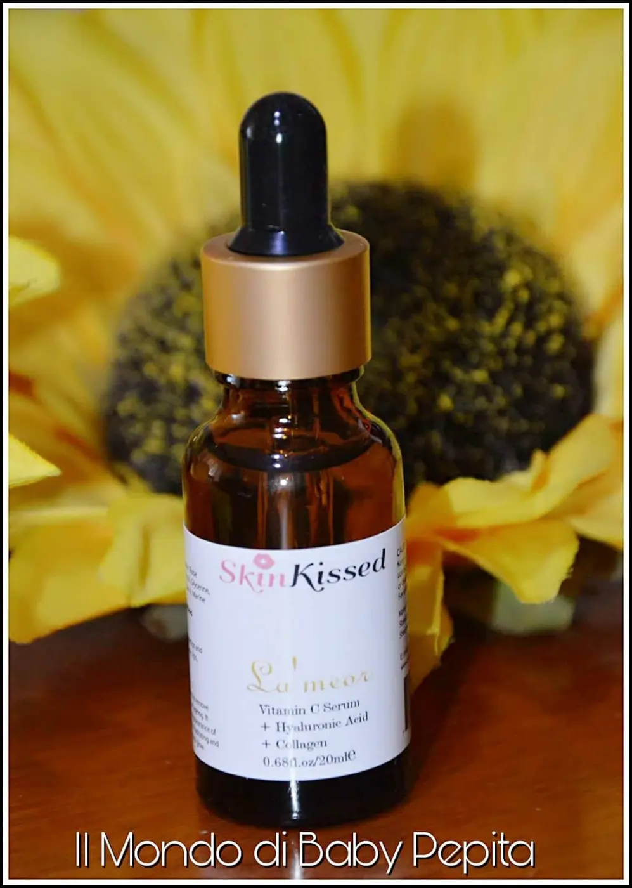
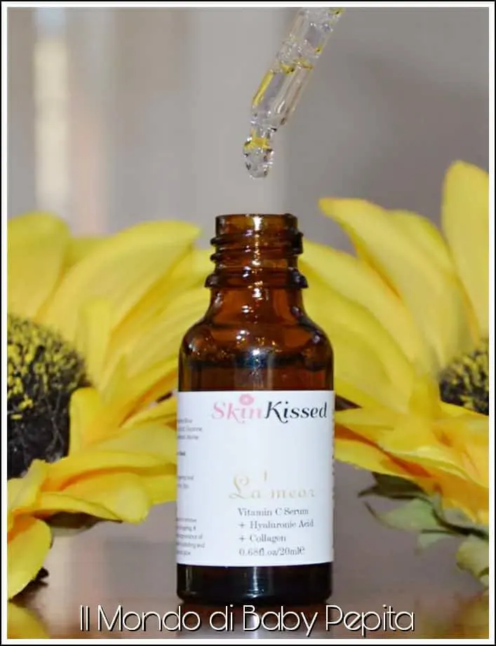

Cura della pelle con Siero SkinKissed
Cura della pelle: Ho provato per una settimana questo siero, inizialmente ero incredula, ma mi sono ricreduta.


L'ho usato e sto ancora usando, la sera prima di andare a letto.
Ne uso 6-7 gocce dal contagocce e le spalmo sul viso proprio come fare con una crema. Poi lascio asciugare il tutto e vado a dormire. Si asciuga subito e pur sembrando un olio non unge per niente. La cosa bella è che è fatta con ingredienti naturali, come la vitamina C e con ingredienti attivi come l'acido ialuronico e il collagene marino.
Sono ingredienti utili per la pelle che prevengono l'invecchiamento e aiutano a mantenere la pelle idratata e luminosa.
Un prodotto ottimo per chi ha problemi di acne, brufoli, rughe e pelle secca. Oltre ad aiutare la pelle a migliorare, è un ottimo primer prima del make-up per preparare il viso ad una base perfetta.
Indicazioni:
✔️ Migliora le piccole rughe e le linee sottili sulla pelle ✔️ Rimuove le cicatrici lasciate sulla pelle dall'acne e cura la pelle impura. ✔️ Migliora la pelle secca e opaca grazie ad un'idratazione profonda ✔️ Renderà la tua pelle radiosa, più liscia e più forte ✔️ Studiato per aiutare le pelli disidratate e le pelli mature. Insomma, un'alleato per le donne sia giovani che più mature che iniziano a vedere i primi sintomi dell'età. Tutto questo con pochi e semplici passi ad un prezzo accessibile a tutti.

Acqua, Acqua alle rose, Vitamina C, Acido Ialuronico, Glicerina, Fenossietanolo, Collagene marino
Indicazioni:Applicare 10-15 gocce sulle dita e massaggiare delicatamente sul viso, labbra, collo e le aree desiderate
Prezzo: 15,95 €